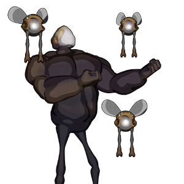

Beelzebub
背景

惊人的 Beelzebub。
这是 Peltapod 亚种的一次惊人演化。该亚种通常为飞行而生，寿命短暂，但这个个体似乎异常耐打且聪明。当它降临并模仿某种人类歌剧时，它的存在感会变得非常明确。
据说，当它在 Peltapod Queen 附近遇到人时，会模仿人类健美姿势，炫耀自己巨大的手臂肌肉。虽然它的腿看起来虚弱，但这种生物可以在短时间内拉近与目标的距离，并引导致命光束焚毁猎物。
在几乎所有情况下，苍蝇注定会死。维度不稳定的乱流常常把苍蝇送到它们无法生存的地方。在几乎每个维度中，即使最低等的生物也能捕捉并吞食苍蝇，把它们当作甜点。不过，在极其罕见的情况下，幸运会赐予一只苍蝇反击的机会。
Beelzebub 就是一只非常幸运的苍蝇。它被抛入丰饶领域，在毫无竞争的情况下尽情进食并变得强壮。带着新获得的力量，它开始追求其他苍蝇从未追求过的东西：统治。
策略
Beelzebub 战斗由 1 个阶段组成。
Beelzebub 可以召唤苍蝇协助战斗。当 HP 降至 50% 时，苍蝇会自动生成。Beelzebub 可以对玩家施加 Decay。
统计
基础 HP：5200
伤害：物理和毒
| 属性 | 抗性 |
|---|---|
| 物理 | 中性 (1x) |
| 火焰 | 弱点 (1.25x) |
| 冰霜 | 抗性 (0.75x) |
| 电击 | 中性 (1x) |
| 光耀 | 抗性 (0.5x) |
| 暗影 | 弱点 (1.5x) |
| 毒 | 抗性 (0.5x) |